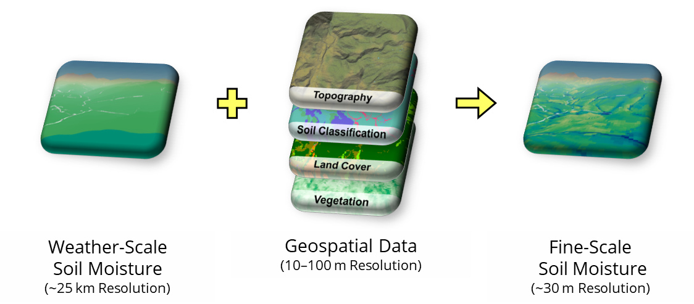

Overview
PODPAC is an open-source Python library built to make analysis of heterogenous geospatial datasets simple, reproducible and cloud-compatible. This document provides a high level overview of the key features of the library.

The goal of PODPAC is to enable the development of portable geospatial data pipelines that can be processed locally or in the cloud. PODPAC makes generation and distribution of processing pipelines intuitive and automatic from concept to application.
The podpac-examples repository provides interactive Jupyter Notebooks demonstrating these key features for a deeper dive.
Data Access
Load data from common data formats.
import podpac
# use `rasterio` to read geotif files
node = podpac.data.Rasterio(source="tile.tif")
# use `zarr` to read Zarr files
node = podpac.data.Zarr(source="tile.zarr", data_key="group/key", lat_key="group/lat", lon_key="group/lon")
# use `xarray` to load an xarray Dataset
node = podpac.data.Dataset(source=dataset, data_key="key1", lat_key="lat", lon_key="lon")
# use `h5py` to ready HDF5 files
node = podpac.data.H5PY(source="data.h5", data_key="key1", lat_key="lat", lon_key="lon")
# use `pandas` to read tabular data
node = podpac.data.CSV(source="data.csv", data_key="column1", lat_key="lat", lon_key="lon")
# access data from WCS compliant server
node = podpac.data.WCS(source="https://server.org/wcs", layer_name="layer1")
Load data through external data catalogues or wrapped data sets.
import podpac
import podpac.datalib
# access data from SMAP (https://nsidc.org/data/smap/smap-data.html)
node = podpac.datalib.SMAP(product='SPL4SMAU', username=username, password=password)
# access data from GFS (https://registry.opendata.aws/noaa-gfs-pds/)
node = podpac.datalib.GFS(parameter='SOIM', level='0-10 m DPTH', date="20200203", hour="1200")
# access Intake Catalogues (https://github.com/intake/intake)
node = podpac.datalib.IntakeCatalog(uri='intake/precip/catalog.yml',
source='southern_rockies',
field='precip',
dims={'time': 'time'})
# access data from terrain tiles (https://registry.opendata.aws/terrain-tiles/)
node = podpac.datalib.TerrainTiles(tile_format='geotiff', zoom=8)
# ... and more each release
Retrieve the raw source data array at full/native resolution. Note: Some data source are too large to fit in RAM, and calling this function can crash Python.
# retrieve full source data
node.get_source_data()
# retrieve bounded source data
node.get_source_data(bounds={'lat': (40, 45), 'lon': (-70, -75)})
Coordinates
Define geospatial and temporal dataset coordinates.
import podpac
# grid coordinates describing grid data (lat x lon)
grid_coords = podpac.Coordinates([[0, 1, 2, 3, 4, 5], [0, 1, 2, 3, 4, 5]], dims=['lat', 'lon'])
# stacked coordinates describing point data ((lat, lon), (lat, lon)...)
stacked_coords = podpac.Coordinates([([0, 1, 2], [0, 1, 2])], dims=[('lat', 'lon')])
# hybrid coordinates describing point data over time
hybrid_coords = podpac.Coordinates([([0, 1, 2], [0, 1, 2]), ['2020-02-01', '2020-02-03']], dims=[('lat', 'lon'), 'time'])
Analysis Pipelines
Build analysis pipelines from data sources and algorithms.
import podpac
# create two data source nodes
nodeA = podpac.data.Rasterio(source="elevation.tif", interpolation="cubic")
nodeB = podpac.datalib.TerrainTiles(tile_format='geotiff', zoom=8)
# average the two data sources together point-wise
alg_node = podpac.algorithm.Arithmetic(A=nodeA, B=nodeB, eqn='(A + B) / 2')
Evaluate pipelines at arbitrary PODPAC coordinates.
# arbitrary Coordinates
coords = podpac.Coordinates([[0, 1, 2, 3], [0, 1, 2, 3]], dims=['lat', 'lon'])
# run analysis pipeline at coordinates
output = alg_node.eval(coords)
Interpolation and Regridding
Interpolation, regridding, and coordinate reference system transformations are handled automatically during evaluation.
import podpac
# define coordinates with an alternate coordinate reference system
coords = podpac.Coordinates([[0, 1, 2, 3], [0, 1, 2, 3]], dims=['lat', 'lon'], crs="EPSG:3857")
# configure interpolation method as `bilinear` for a node
node = podpac.data.Rasterio(source="elevation.tif", interpolation="bilinear")
# evaluate node at coordinates with specified interpolation
output = node.eval(coords)
Process on the cloud
Build AWS cloud resources and run your PODPAC analysis in the cloud using AWS Lambda functions.
import podpac
from podpac import settings
# Input AWS Credentials
settings["AWS_ACCESS_KEY_ID"] = "access key id"
settings["AWS_SECRET_ACCESS_KEY"] = "secrect access key"
# create example data source node and AWS node
node = podpac.algorithm.SinCoords()
aws_node = podpac.managers.aws.Lambda(source=node)
# build AWS cloud resources to run analysis
aws_node.build()
# run analysis on the cloud, results returned to `output`
coordinates = podpac.Coordinates([clinspace(-90, 90, 180), clinspace(90,-90, 180), '2018-01-01'], ['lat', 'lon', 'time'])
output = aws_node.eval(coordinates)